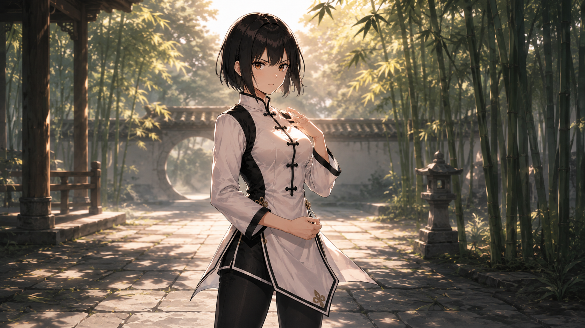
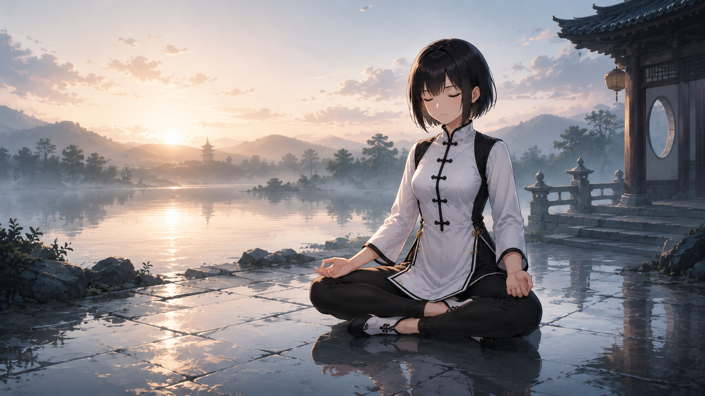
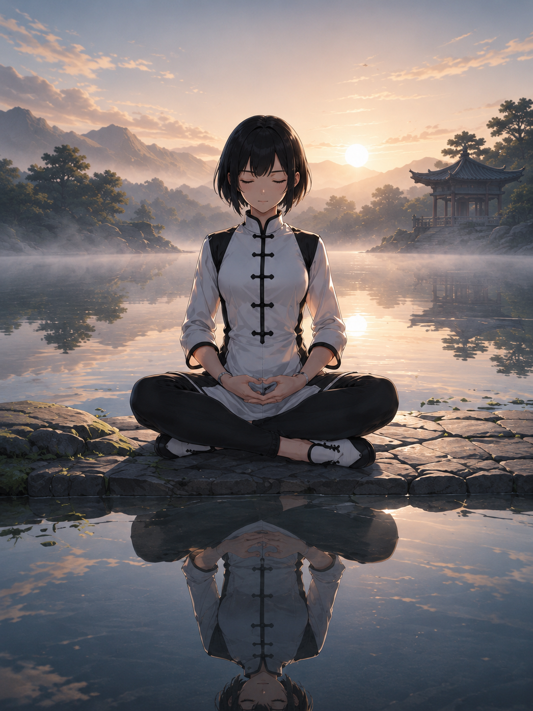
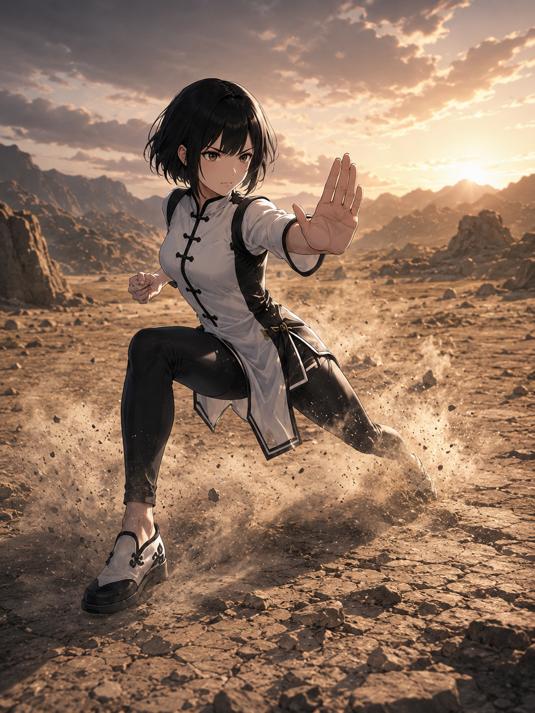
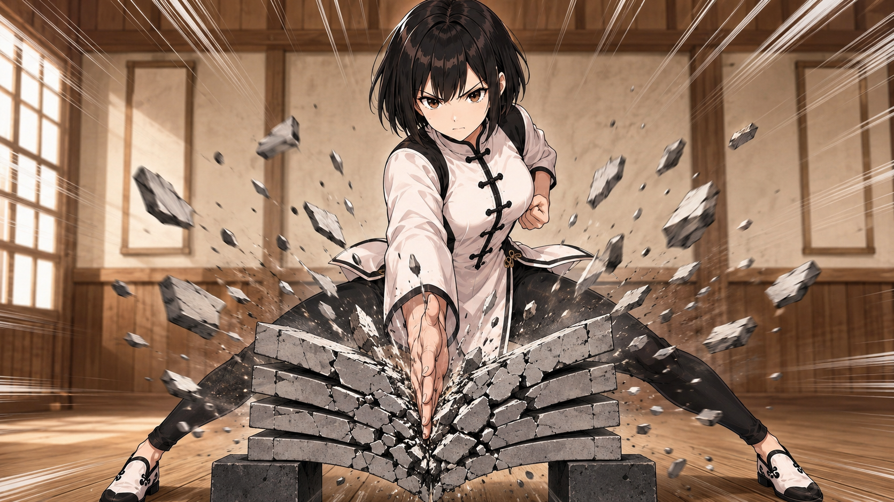
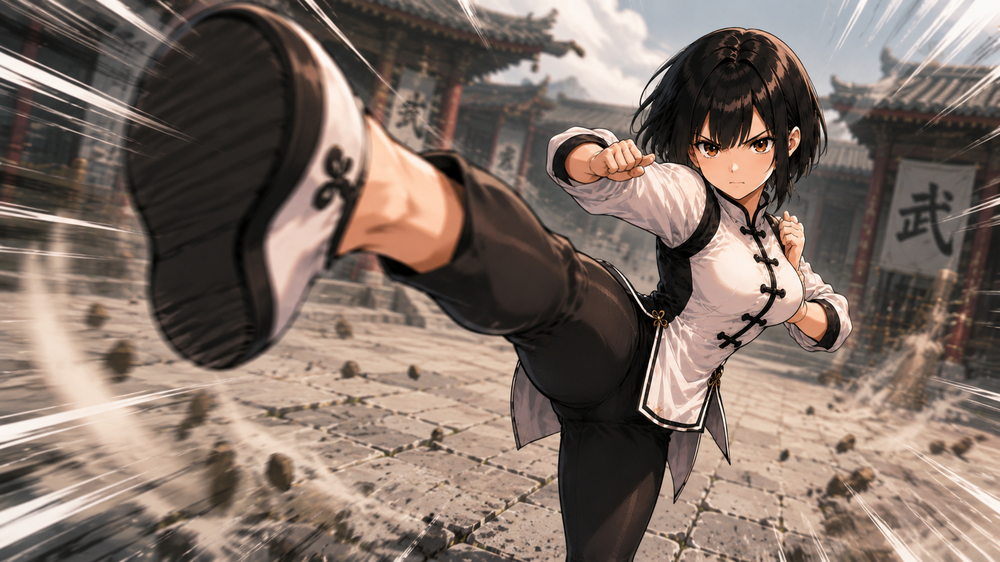
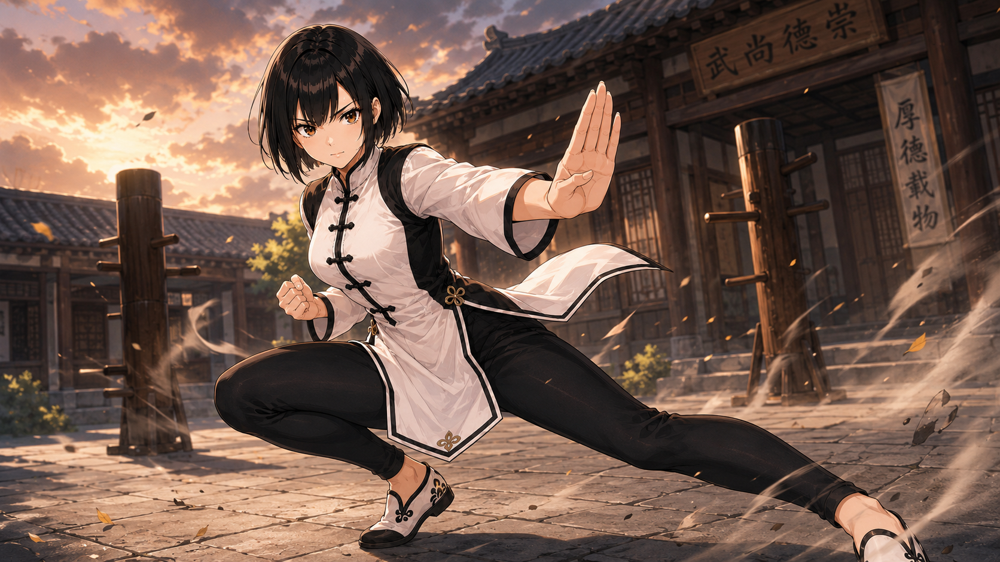

AIで作る武術ポーズのプロンプト集｜静から動へ、構図とモーションを組み立てる
今回は、参考画像を活かしながら、様々な武術ポーズを作るためのプロンプトを整理しました。静かな瞑想から、構え、衝撃のあるアクションまで、静から動への流れで見せていきます。
ただキャラクターを描くだけではなく、低い重心、間合い、モーションブラー、逆光、画面内の流れなど、武術らしい身体感覚が伝わるようにプロンプトを組んでいます。
この記事のプロンプトは、ゼロからキャラクターを指定するのではなく、参考画像を渡して、その人物・服装・髪型・体型を保持する作りです。プロンプト側では、武術らしい重心、構図、光、モーションの見せ方を補強することを狙いにしています。
基本方針
- 参考画像の人物・服装・髪型・体型は保持する
- プロンプトでは、構図、光、動き、空気感を補強する
- アクションでは、顔と体幹を崩さず、ブラーは袖・髪・背景・破片などに寄せる
今回の見方
静かな瞑想系は「呼吸」「余白」「光」を、構え系は「重心」「間合い」「視線誘導」を、戦闘系は「速度」「軌跡」「衝撃」を中心に見ています。
導入・世界観
まずは、場所の空気を見せるカットです。武術イラストでは、背景の湿度や奥行きがキャラクターの説得力を支えてくれます。
竹林の水辺を歩く静かな導入

竹林と水辺の広がりを見せる横長の一枚。人物よりも空気感と場所の美しさを重視する導入カットに向いている。
見どころ: 竹林の奥行き、水面の柔らかい反射、人物を小さく置いた余白。
プロンプトの狙い: 修練前の静けさ、場所の気配、人物の落ち着き。横長のパノラマ構図で、左に人物、右に水面と遠景を広く取る。ほぼ静止。衣装や竹葉にごく弱い風の気配を入れる。
コピー用プロンプト（参考画像用）
Use the reference image as the main guide for the character, outfit, hairstyle, body type, composition, and mood.
Preserve the person, outfit, hairstyle, and body type from the reference image; only the fixed-character version adds separate character details.
Create a high-quality anime-style illustration set in a stone path beside water, surrounded by bamboo. The pose/action is a calm standing pose, as if just before beginning to walk, expressing the quiet before training, the sense of place, and the character’s composure.
Composition: a wide panoramic composition with the character on the left and water plus distant scenery opening to the right. Emphasize depth in the bamboo grove, soft water reflections, negative space created by the small figure placement.
Keep mostly still, with only a faint breeze in the clothing and bamboo leaves, soft bright light through bamboo leaves and light morning mist, and peaceful, clear, and introductory, like the beginning of training. The scene should feel quiet, focused, and cinematic rather than chaotic.
Use background texture, natural depth, clear body weight balance, strong visual focus, high-quality anime style, sharp linework, detailed eyes, natural cloth folds, balanced anatomy, polished illustration finish.
Avoid extra characters, unwanted weapons, text, logos, distorted hands, broken fingers, incorrect limb joints, overly muscular body, childish proportions, excessive motion blur.
静の修練
動きの前にある静けさのカットです。呼吸、座法、反射、柔らかい光を使って、武術家としての内面を見せます。
湖畔で座禅する広い夕景

夕暮れの湖畔で瞑想する横長構図。人物の静けさと、広い水面・山並みの余韻が主役になる。
見どころ: 広い水面の余白、夕焼けのグラデーション、静かな座像のシルエット。
プロンプトの狙い: 戦う前に心を整える静の修練。横長の画面で人物を右寄りに置き、湖と空の余白を大きく使う。完全に静止した瞑想感を保ち、水面だけにわずかな揺らぎを入れる。
コピー用プロンプト（参考画像用）
Use the reference image as the main guide for the character, outfit, hairstyle, body type, composition, and mood.
Preserve the person, outfit, hairstyle, and body type from the reference image; only the fixed-character version adds separate character details.
Create a high-quality anime-style illustration set in a quiet lakeside at sunset with distant mountains and a pavilion. The pose/action is seated by the water in a cross-legged meditation pose, expressing quiet inner training, centering the mind before combat.
Composition: a wide frame with the figure placed to the right, using the lake and sky as spacious negative space. Emphasize broad negative space on the water, sunset color gradient, quiet seated silhouette.
Keep keep the meditation completely still, with only slight ripples on the water, soft sunset backlight and reflected light from the water, and serene and lingering, with a sense of quiet breath. The scene should feel quiet, focused, and cinematic rather than chaotic.
Use background texture, natural depth, clear body weight balance, strong visual focus, high-quality anime style, sharp linework, detailed eyes, natural cloth folds, balanced anatomy, polished illustration finish.
Avoid extra characters, unwanted weapons, text, logos, distorted hands, broken fingers, incorrect limb joints, overly muscular body, childish proportions, excessive motion blur.
湖と山を背にした夕暮れの瞑想

湖畔で正面を向いて瞑想する一枚。背後の夕日と山並みが、静かな精神性を強く見せる。
見どころ: 夕日を背負う静かなシルエット、湖面と山の奥行き、真正面の安定感。
プロンプトの狙い: 心身を中心に戻す、静かな精神統一。人物を中央に置き、湖面と山を左右に広げた安定した構図。静止を保ち、水面と霧だけに微細な動きを入れる。
コピー用プロンプト（参考画像用）
Use the reference image as the main guide for the character, outfit, hairstyle, body type, composition, and mood.
Preserve the person, outfit, hairstyle, and body type from the reference image; only the fixed-character version adds separate character details.
Create a high-quality anime-style illustration set in a quiet rocky lakeside surrounded by mountains at sunset. The pose/action is facing forward, seated cross-legged with hands folded in meditation, expressing quiet mental centering, returning body and mind to balance.
Composition: a centered figure with lake and mountains spreading symmetrically to both sides. Emphasize quiet silhouette against the sunset, depth of lake and mountains, stability of the front-facing pose.
Keep keep the body still, with only minute motion in the water and mist, sunset backlight and reflection from the lake surface, and serene, spiritual, and spacious. The scene should feel quiet, focused, and cinematic rather than chaotic.
Use background texture, natural depth, clear body weight balance, strong visual focus, high-quality anime style, sharp linework, detailed eyes, natural cloth folds, balanced anatomy, polished illustration finish.
Avoid extra characters, unwanted weapons, text, logos, distorted hands, broken fingers, incorrect limb joints, overly muscular body, childish proportions, excessive motion blur.
水鏡に映る正面瞑想

湖面に姿が映る、正面性の強い瞑想カット。人物、反射、夕空の対称性が美しい。
見どころ: 水鏡の反射、正面構図の安定感、夕空と山のグラデーション。
プロンプトの狙い: 水面の反射で、内面の静けさと均衡を見せる。人物と水面の反射を縦方向に重ね、中心軸を強く見せる。ほぼ完全な静止。水面には小さな波紋だけを入れる。
コピー用プロンプト（参考画像用）
Use the reference image as the main guide for the character, outfit, hairstyle, body type, composition, and mood.
Preserve the person, outfit, hairstyle, and body type from the reference image; only the fixed-character version adds separate character details.
Create a high-quality anime-style illustration set in a quiet place beside shallow lake water at sunset, with a clear reflection. The pose/action is front-facing, seated cross-legged, eyes closed in meditation, expressing showing inner calm and balance through the water reflection.
Composition: stack the figure and water reflection vertically, emphasizing a strong central axis. Emphasize mirror-like water reflection, stability of the front composition, gradient of sunset sky and mountains.
Keep near-complete stillness, with only tiny ripples on the water surface, soft sunset backlight and faint reflected light from the water, and quiet, mystical, and centered. The scene should feel quiet, focused, and cinematic rather than chaotic.
Use background texture, natural depth, clear body weight balance, strong visual focus, high-quality anime style, sharp linework, detailed eyes, natural cloth folds, balanced anatomy, polished illustration finish.
Avoid extra characters, unwanted weapons, text, logos, distorted hands, broken fingers, incorrect limb joints, overly muscular body, childish proportions, excessive motion blur.
構えと間合い
ここでは、低い重心や手の位置、相手との距離感を重視します。派手な攻撃よりも、動き出す直前の圧を狙っています。
夕日の道場で構える静かな間合い

夕日が差し込む道場で、低く構えて相手との距離を測る一枚。強い逆光と床の導線が、静かな圧を作っている。
見どころ: 強い逆光のシルエット、床に伸びる長い影、低い重心からくる緊張感。
プロンプトの狙い: 戦う直前の間合い、集中、静かな威圧感。ローアングルで人物を大きく配置し、床板の線と背後の太陽で視線を中央に集める。大きな動きは抑え、髪と衣装にわずかな揺れを残す。
コピー用プロンプト（参考画像用）
Use the reference image as the main guide for the character, outfit, hairstyle, body type, composition, and mood.
Preserve the person, outfit, hairstyle, and body type from the reference image; only the fixed-character version adds separate character details.
Create a high-quality anime-style illustration set in an old wooden dojo lit by a low sunset. The pose/action is a low defensive stance with one knee deeply bent and one hand extended forward, expressing distance control, focus, and quiet pressure just before a fight.
Composition: a low-angle composition with the figure large in frame, floor lines and the backlit sun drawing the eye to the center. Emphasize strong backlit silhouette, long shadows across the floor, tension from the low center of gravity.
Keep keep the action restrained, with only subtle movement in the hair and clothing, golden rim light from behind and long shadows falling across the floor, and quiet, taut, cinematic tension before a confrontation. The scene should feel quiet, focused, and cinematic rather than chaotic.
Use background texture, natural depth, clear body weight balance, strong visual focus, high-quality anime style, sharp linework, detailed eyes, natural cloth folds, balanced anatomy, polished illustration finish.
Avoid extra characters, unwanted weapons, text, logos, distorted hands, broken fingers, incorrect limb joints, overly muscular body, childish proportions, excessive motion blur.
雨上がりの石畳で構える朝の稽古

雨上がりの石畳に立ち、片手を前に出して構える一枚。湿った床の反射と朝靄が、静かな稽古の緊張感を支える。
見どころ: 濡れた石畳の反射、霧に包まれた奥行き、構えの安定感。
プロンプトの狙い: 攻撃よりも間合いを制する冷静な構え。縦構図で人物を中央に置き、石畳の遠近線と灯籠で奥行きを作る。動き始める直前の静止。衣装の裾だけに軽い揺れを残す。
コピー用プロンプト（参考画像用）
Use the reference image as the main guide for the character, outfit, hairstyle, body type, composition, and mood.
Preserve the person, outfit, hairstyle, and body type from the reference image; only the fixed-character version adds separate character details.
Create a high-quality anime-style illustration set in a rain-wet stone courtyard and temple path after dawn. The pose/action is a stable martial stance with legs spread wide and one hand raised forward, expressing a calm stance focused on controlling distance rather than attacking.
Composition: a vertical central composition using stone path perspective lines and lanterns to create depth. Emphasize reflections on wet stone, misty depth, stability of the stance.
Keep a held moment just before movement, with only slight motion in the clothing hem, low morning light diffused by mist, soft and humid, and composed, disciplined tension before training. The scene should feel quiet, focused, and cinematic rather than chaotic.
Use background texture, natural depth, clear body weight balance, strong visual focus, high-quality anime style, sharp linework, detailed eyes, natural cloth folds, balanced anatomy, polished illustration finish.
Avoid extra characters, unwanted weapons, text, logos, distorted hands, broken fingers, incorrect limb joints, overly muscular body, childish proportions, excessive motion blur.
乾いた荒野で踏み込む掌底構え

乾いた地面で低く構え、片手を前へ出す荒野の戦闘カット。砂埃と夕日が、硬派な緊張感を出している。
見どころ: 舞い上がる砂埃、荒野の硬い質感、逆光で浮く掌と輪郭。
プロンプトの狙い: 荒い地形でも崩れない重心と、反撃前の圧。人物を中央に置き、地面の砂埃と空の広がりでスケールを出す。踏み込みで足元の砂だけを散らし、上半身は鋭く止める。
コピー用プロンプト（参考画像用）
Use the reference image as the main guide for the character, outfit, hairstyle, body type, composition, and mood.
Preserve the person, outfit, hairstyle, and body type from the reference image; only the fixed-character version adds separate character details.
Create a high-quality anime-style illustration set in a dry rocky wasteland under sunset light. The pose/action is a low stance with one knee bent and an open palm guard extended forward, expressing stable balance on rough ground and pressure before counterattacking.
Composition: center the figure, using dust on the ground and broad sky for scale. Emphasize rising dust, hard texture of the wasteland, backlit palm and silhouette.
Keep scatter dust around the feet from the step while keeping the upper body sharply held, strong low sunset backlight with dry warm reflected light, and dry tension and one-on-one pressure in a harsh landscape. The scene should feel quiet, focused, and cinematic rather than chaotic.
Use background texture, natural depth, clear body weight balance, strong visual focus, high-quality anime style, sharp linework, detailed eyes, natural cloth folds, balanced anatomy, polished illustration finish.
Avoid extra characters, unwanted weapons, text, logos, distorted hands, broken fingers, incorrect limb joints, overly muscular body, childish proportions, excessive motion blur.
動きのある戦闘
アクション系では、速度や衝撃を出しつつ、顔と体幹が読めるようにするのがポイントです。ブラーは背景、袖、髪、破片に寄せます。
風をまとって旋回を表現した戦闘ポーズ

森の石橋で、風の軌跡をまといながら旋回を表現する戦闘ポーズ。白い流れと低い重心が、回転の勢いを見せている。
見どころ: 白い風の軌跡、旋回を感じる体のひねり、木漏れ日と影のコントラスト。
プロンプトの狙い: 直線的な疾走ではなく、風の流れで旋回と身体操作を見せる。白い風の軌跡を人物の周囲に弧状に配置し、旋回の流れを画面全体で見せる。風の軌跡と袖に強めのブラーを入れ、顔と胴体の芯は読み取れるようにする。
コピー用プロンプト（参考画像用）
Use the reference image as the main guide for the character, outfit, hairstyle, body type, composition, and mood.
Preserve the person, outfit, hairstyle, and body type from the reference image; only the fixed-character version adds separate character details.
Create a high-quality anime-style illustration set in a forest stone bridge and stone path lit by shafts of sunlight. The pose/action is twisting the body in a low stance, expressing a turning motion as if wrapped in wind, expressing show rotation and body control through flowing wind, rather than a straight sprint.
Composition: arrange white wind trails in arcs around the character, showing the turning flow across the whole frame. Emphasize white wind trails, twisted body posture suggesting rotation, contrast of sunlight and forest shadow.
Keep use strong blur in the wind trails and sleeves while keeping the face and torso readable, slanting forest light and dark shadows making the white motion trails stand out, and sharp and fast, with tension as if controlling the surrounding wind. The scene should feel quiet, focused, and cinematic rather than chaotic.
Use background texture, natural depth, clear body weight balance, strong visual focus, high-quality anime style, sharp linework, detailed eyes, natural cloth folds, balanced anatomy, polished illustration finish.
Avoid extra characters, unwanted weapons, text, logos, distorted hands, broken fingers, incorrect limb joints, overly muscular body, childish proportions, excessive motion blur.
正面からの瓦割り

正面から瓦や床材を割る瞬間を見せる一枚。飛び散る破片と体の中心軸が、真っ直ぐな衝撃を強調している。
見どころ: 正面からの衝撃の分かりやすさ、飛び散る破片、ぶれない体幹と足幅。
プロンプトの狙い: 正面から見た瓦割りの衝撃と、体幹の安定感を見せる。正面構図で人物と破壊点を中央に置き、破片を左右に広げる。破片と埃に強い動きを入れ、人物の体の中心はぶらさず残す。
コピー用プロンプト（参考画像用）
Use the reference image as the main guide for the character, outfit, hairstyle, body type, composition, and mood.
Preserve the person, outfit, hairstyle, and body type from the reference image; only the fixed-character version adds separate character details.
Create a high-quality anime-style illustration set in inside a wooden dojo, viewed from the front at the instant tiles or floor material break apart. The pose/action is standing with both legs braced, driving force downward from a frontal position, expressing show the impact of a frontal tile-breaking strike and the stability of the core.
Composition: use a frontal composition, placing the character and break point in the center with debris spreading to both sides. Emphasize clear frontal impact, flying fragments, stable core and wide stance.
Keep add strong motion to debris and dust while keeping the character?s core steady, bright dojo light and debris shadows emphasizing the impact point, and power exploding for a single instant out of quiet martial control. The scene should feel quiet, focused, and cinematic rather than chaotic.
Use background texture, natural depth, clear body weight balance, strong visual focus, high-quality anime style, sharp linework, detailed eyes, natural cloth folds, balanced anatomy, polished illustration finish.
Avoid extra characters, unwanted weapons, text, logos, distorted hands, broken fingers, incorrect limb joints, overly muscular body, childish proportions, excessive motion blur.
蹴り足が画面に迫る超接近アクション

蹴り足を画面手前へ大きく出した迫力重視のカット。遠近感と白い軌跡で、蹴り足が画面に迫る距離感を見せる。
見どころ: 足裏の強いパース、白い衝撃線、砂埃と背景ブラー。
プロンプトの狙い: 見る側に迫る蹴り足の衝撃と距離感。超広角の遠近感で足裏を大きく、顔と体を奥に小さく配置する。蹴りの周囲に強いブラーと円弧状の軌跡を入れ、顔は読み取れる程度に残す。
コピー用プロンプト（参考画像用）
Use the reference image as the main guide for the character, outfit, hairstyle, body type, composition, and mood.
Preserve the person, outfit, hairstyle, and body type from the reference image; only the fixed-character version adds separate character details.
Create a high-quality anime-style illustration set in an outdoor training yard or courtyard with dust in the air. The pose/action is thrusting a kicking foot toward the camera with the upper body farther back, expressing the impact and proximity of a kicking foot rushing toward the viewer.
Composition: use extreme wide-angle perspective, making the sole large in the foreground and the face/body smaller behind. Emphasize strong perspective on the sole, white impact lines, dust and background blur.
Keep use strong blur and arc-shaped trails around the kick while keeping the face somewhat readable, hard outdoor light and dust reflection emphasizing the kick silhouette, and an aggressive instant prioritizing impact and speed. The scene should feel quiet, focused, and cinematic rather than chaotic.
Use background texture, natural depth, clear body weight balance, strong visual focus, high-quality anime style, sharp linework, detailed eyes, natural cloth folds, balanced anatomy, polished illustration finish.
Avoid extra characters, unwanted weapons, text, logos, distorted hands, broken fingers, incorrect limb joints, overly muscular body, childish proportions, excessive motion blur.
低姿勢で片脚を伸ばしたポーズ

夕日の中庭で、低い姿勢から片脚を長く伸ばしたポーズ。蹴りの攻撃性より、柔軟性と体幹の安定感を見せる。
見どころ: 長く伸びる脚のライン、夕日の逆光、低い姿勢の安定感。
プロンプトの狙い: 低い重心、柔軟性、脚のラインの美しさを見せる。横長に近い画面で脚のラインを大きく取り、夕日を背後に置く。動きは控えめにし、衣装の裾と髪にわずかな流れを入れる。
コピー用プロンプト（参考画像用）
Use the reference image as the main guide for the character, outfit, hairstyle, body type, composition, and mood.
Preserve the person, outfit, hairstyle, and body type from the reference image; only the fixed-character version adds separate character details.
Create a high-quality anime-style illustration set in a dojo courtyard or temple stone path lit by sunset. The pose/action is sinking low and extending one leg sideways into a long controlled pose, expressing show a low center of gravity, flexibility, and the beauty of the extended leg line.
Composition: use a wide-feeling frame to emphasize the leg line, placing the sunset behind. Emphasize long extended leg line, sunset backlight, stability of the low posture.
Keep keep motion restrained, adding only slight flow to the clothing hem and hair, warm sunset backlight and reflection from the stone paving, and quiet and graceful tension, showing a single moment of formal technique. The scene should feel quiet, focused, and cinematic rather than chaotic.
Use background texture, natural depth, clear body weight balance, strong visual focus, high-quality anime style, sharp linework, detailed eyes, natural cloth folds, balanced anatomy, polished illustration finish.
Avoid extra characters, unwanted weapons, text, logos, distorted hands, broken fingers, incorrect limb joints, overly muscular body, childish proportions, excessive motion blur.
キャラクター紹介
最後は、キャラクターを見せるための静かな一枚です。衣装や顔立ち、道場との関係が分かるようにしています。
道場入口に立つ静かな肖像

道場の入口に立つ、キャラクター紹介向きの落ち着いた一枚。背景の掛け軸と自然光が、武術家としての芯を見せている。
見どころ: 表情の見やすさ、衣装の確認しやすさ、道場背景によるキャラ性。
プロンプトの狙い: キャラクター紹介としての落ち着き、芯の強さ、親しみやすさ。上半身から全身寄りの縦構図で、道場の入口と掛け軸を背景に入れる。動きは入れず、髪と衣装の自然なまとまりを重視する。
コピー用プロンプト（参考画像用）
Use the reference image as the main guide for the character, outfit, hairstyle, body type, composition, and mood.
Preserve the person, outfit, hairstyle, and body type from the reference image; only the fixed-character version adds separate character details.
Create a high-quality anime-style illustration set in near the entrance of a dojo, with a hanging scroll and courtyard visible. The pose/action is standing naturally while facing forward, one hand lightly clenched, expressing a character introduction showing composure, inner strength, and approachability.
Composition: a vertical portrait-like composition including the dojo entrance and hanging scroll in the background. Emphasize clear facial expression, easy-to-read outfit details, character identity supported by the dojo background.
Keep avoid action; emphasize natural hair and clothing shape, natural light from the entrance illuminating the face and outfit clearly, and calm, polite, and quietly present for character introduction. The scene should feel quiet, focused, and cinematic rather than chaotic.
Use background texture, natural depth, clear body weight balance, strong visual focus, high-quality anime style, sharp linework, detailed eyes, natural cloth folds, balanced anatomy, polished illustration finish.
Avoid extra characters, unwanted weapons, text, logos, distorted hands, broken fingers, incorrect limb joints, overly muscular body, childish proportions, excessive motion blur.
使い回す時の調整ポイント
- アクションが激しい画像では、`keep the face and torso readable` のように顔と体幹を残す指定を入れる
- 瞑想や静かな構図では、ブラーよりも余白、反射、光の柔らかさを優先する
- 参考画像を使う場合、人物説明を盛りすぎると服装や髪型が上書きされやすい
まとめ
武術イラストは、ポーズ名だけでは雰囲気が出にくいので、重心、間合い、光、画面内の流れをセットで指定すると狙いが伝わりやすくなります。
特に小鈴のようなキャラクターでは、派手な攻撃だけでなく、静かな瞑想や礼法のカットを混ぜることで、武術家としての説得力が出しやすくなりました。